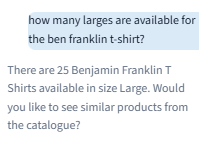
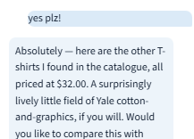
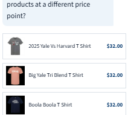
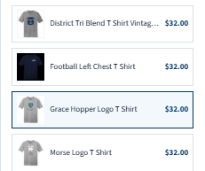
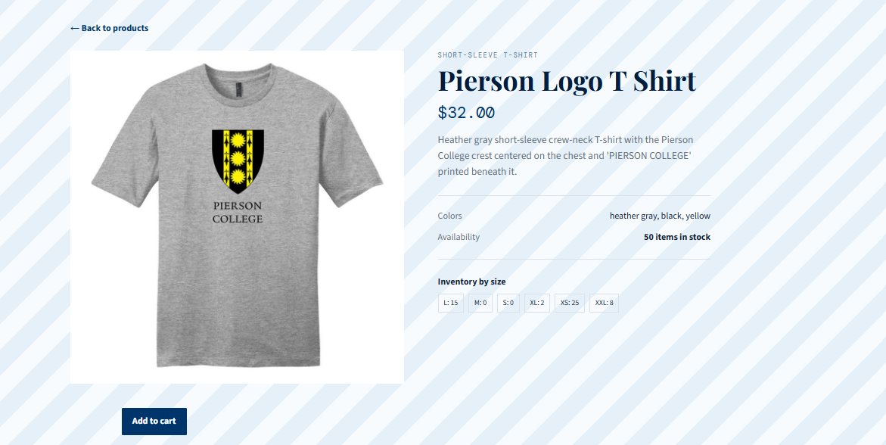
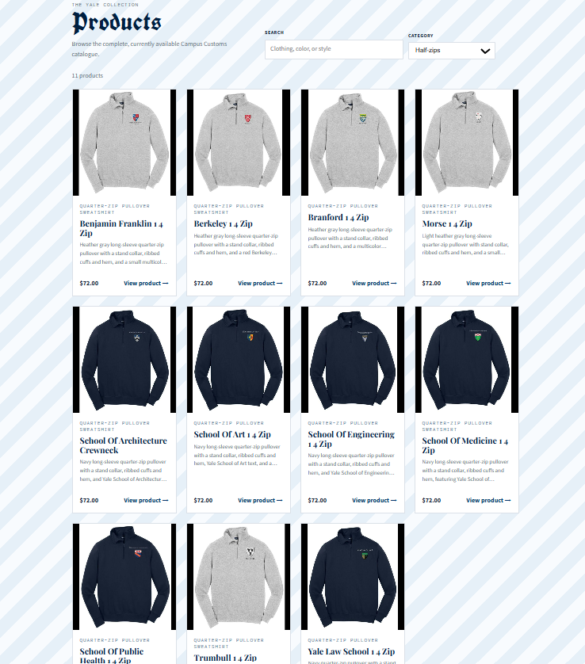

Testing documentation for the Yale Bulldog Blue Store website and chatbot.
This screenshot shows the chatbot correctly identifying the inventory level for the Large Benjamin Franklin T Shirt product as 25 shirts.

The screenshots show the chatbot correctly returning a full catalogue of T-shirts after I responded to a follow-up from the Benjamin Franklin query asking if I would like to see all T-shirts. The last screenshot shows a product page opening after I clicked on the Pierson Logo T Shirt catalogue entry.




This screenshot shows the website correctly applying the added product filter for half-zip sweaters. Only the matching products appear in the filter results.
